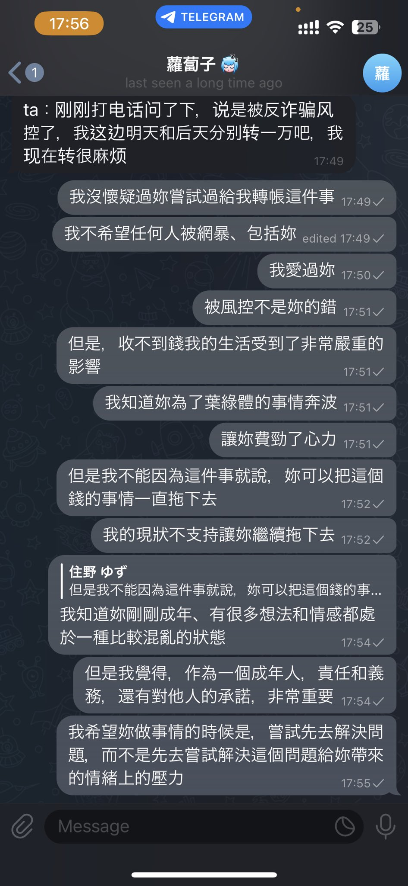
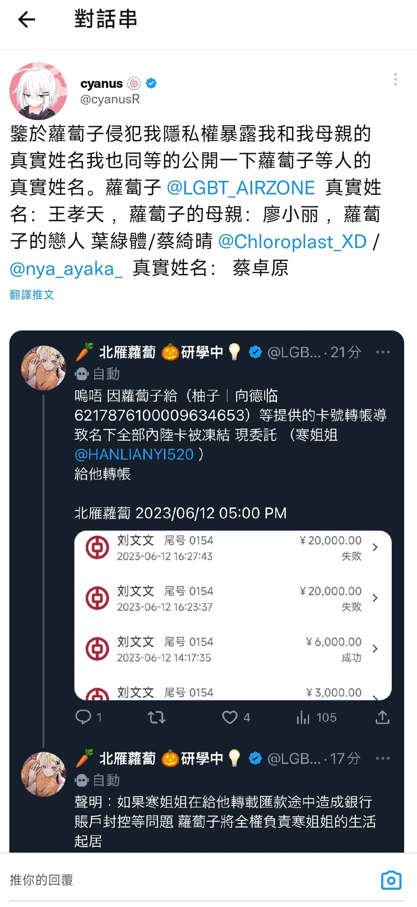
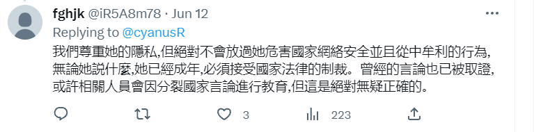
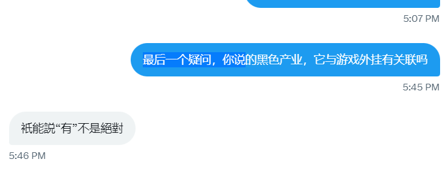
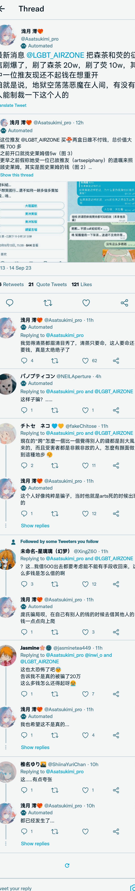

这是一件非常令人无语和无厘头的事,也正是这一件事他将自己彻底暴露出来,事件的来龙去脉大致是： “他向网络上的“姐姐”借走了3万人民币，之后这位“姐姐”向他要回这3万，但是双方有不妥争吵起来 他和他的“姐姐”相互开盒暴露了自己的信息 ”
 从这位口中得知 “北雁蘿蔔子” 在做灰色产业链，不知道对方是怎样得知（我个人认为可能是大陆网警）。
 从github上直接搜索王孝天的推特用户名 “LGBT-AIRZONE” 可以直接得到他的主页信息
（在他参与的组织（组织名：联想未来）项目里可以找到他和他同学参与的学校项目）
王孝天在项目中透露的学生名单可以得知和推特上开盒的信息相符（随后王孝天立即退出组织保护隐私证明了他的信息是无误的）
“萝卜子”和“萝卜挂”的音十分相似，但这也不能标明他是萝卜挂的作者
这是王孝天的推特主页，在个人URL中，直接标注自己的telegram账号是t.me/c_acy_radish
注意这之中的c_acy关键字，是不是很熟悉？如果你把下行线改成-，并且后缀加上.com，你会发现这就是萝卜挂的官网（c-acy.com），看似或许是凑巧？接着看 注：在9月14日夜，王孝天亲自曝光自己的网站为C-ACY.COM
（注意，王孝天的部分账号已于6月因为个人信息泄露而注销，但是在本仓库中仍保留着他部分删除前的个人信息）
结合王孝天的github使用记录也可以得知他在参与一个叫“clientos”的项目
说这么多这又和红色警戒有什么关系呢？mentomega是红色警戒的一个知名mod，也就是说他在参与红色警戒的相关项目
来我们综上所述，王孝天的疑点：萝卜为昵称的主要关键词，c_acy是萝卜挂的官网，github又在参与红警的项目，还有“晶哥”没有否认的外挂制作。天底下会有这么巧合的事？？？？
这傻逼经常在推特经常晒一些侈靡的生活日常，比如不小心包了一车厢，（头等舱）飞机又延误了..不知道是不是从一些死妈开挂傻逼那里赚的给他妈买棺材的钱
王孝天本身行为已经违法，就是国内一名成年人，希望所有真心热爱红警的玩家能够把这个傻逼绳之以法
王孝天精通PUA，于9月14号现已涉嫌诈骗弱势群体40多万元，部分受害者看下图
这些是他的个人账号信息：
https://twitter.com/LGBT_AIRZONE
https://space.bilibili.com/617128597
https://github.com/LGBT-AIRZONE